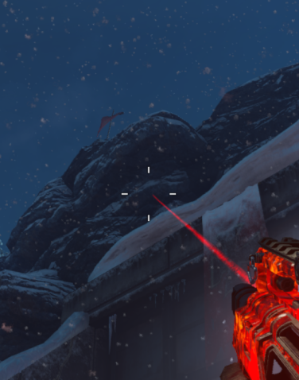

Step 4: Shoot the Flag
Next is to shoot down a red flag.
Head to the Rocket Platform with the Wrath of the Ancients and shoot down a red flag. The flag is located on a cliffside above and slightly to the left of the giant blast doors that shut during a Rocket Test
- The red flag needs to be shot at the base of where it is planted in the ground, not the actual flag itself.